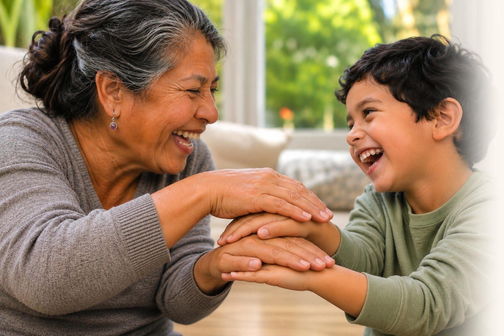

About
Hi, I'm Ellis
Early childhood coaching in San Diego. Dutch-American. Two decades of editing scientific work — and the last fourteen years figuring out, with families, what actually helps a kid grow.
Where I come from
The long way around
First an art historian. Then twenty-plus years editing scientific writing — infrared reflectography, X-ray analysis of paintings, the careful work of looking at something many times and asking what it actually is.
The pivot to early childhood came late but it didn't come from nowhere. Family literacy at Words Alive! in San Diego. Years as a BCBA-in-training and program supervisor at TERI, Kyo, and Gateway, running SDRC early-intervention caseloads. The thread underneath all of it: how does a small human grow, and what helps?
Trained in
The receipts
In plain English for parents — with the trademarked acronyms parked at the bottom for the pediatrician who asks.
What I work with
- The gold-standard early autism assessment
- The leading attachment-based intervention
- The major evidence-based parent-coaching models
- Peer-skills work for preschoolers through young adults
- Nervous-system regulation through tapping (joining late 2026)
The lineage underneath
Trauma-informed throughout — the Trauma Research Foundation certificate (Bessel van der Kolk's program) is the lineage that ties the rest together.
Two masters: MS Ed in Applied Behavior Analysis (Purdue) and MA in Art History.
For the pediatrician — the trademarked acronyms
- ADOS-2 and ADOS-2 Toddler — qualified administrator
- Theraplay Foundational + MIM — in progress under Kerri Garner, Phoenix
- Project ImPACT CA — building national certification cases under Anna Dvortcsak
- Early Start Denver Model (ESDM)
- PEERS® provider — preschoolers through young adults
- EFT International — in progress under Jackie Viramontez, certification target September 2026
- PECS-trained; IBCCES Certified Autism Specialist
- Certified Special Needs Life Quality Coach
- Certified ESL and TESOL instructor; bilingual Dutch/English
How I work
Strength-based, FUNSTIGATOR-energy
Positive reinforcement, not pathology. Real warmth, not performative cheer. I look for what your kid is already doing, and I follow it. I'm a Dutch-American who walks in the SoCal rain without a coat — direct, embodied, alive. The world is what it is. Here's what's possible. Let's go.
All early childhood work is, ultimately, about human-to-human connection — which matters more in the AI era, not less. A trustworthy adult patiently showing up. The screen can't be that. We can.
Off the clock, you will usually find me dancing. No steps, no choreography, just free movement, letting my body go where it needs to. It is how I think things through, shake off a long day, and stay honest about what real attention and attunement feel like.
Maybe that is why I believe no two families share the same rhythm. Together, we will find what works for yours.
Let's meet
Want to see if we're a fit?
A free discovery call. No prep, no script — just a conversation.
A reach. A glance. A shared giggle.

Play speaks louder than words.
Confidential · Zero pressure · Tailored to your schedule